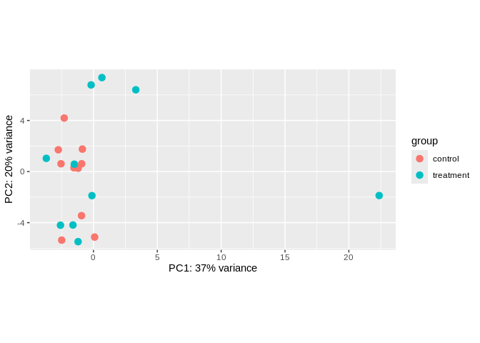
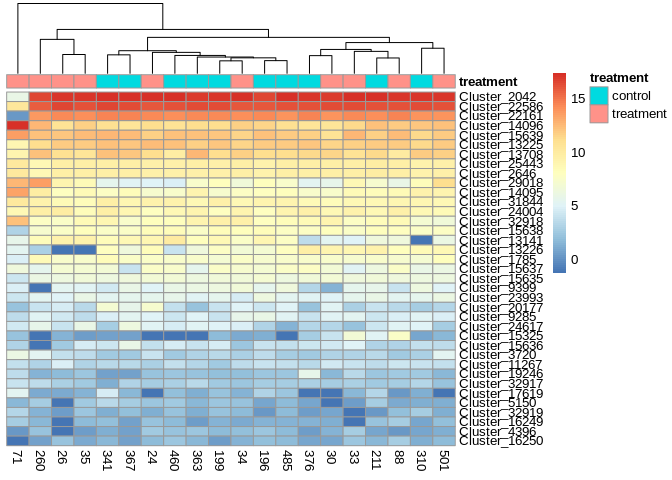

This analysis was done as part of project-clam-oa (GitHub repo).
The contents below are from markdown knitted from 03.00-D-sRNAseq-gene-expression-DESeq2.Rmd (commit 54eb41b).
03.00-D-sRNAseq-gene-expression-DESeq2
Sam White 2025-01-31
1 Background
This will run DEseq2 (Love, Huber, and Anders 2014) to determine if any of the miRNAs identified in 02.00-ShortStack-31bp-fastp-merged.md analysis are differentially expressed between control/treatment.
ShortStack identified 37 miRNAs.
1.1 Inputs
Counts.txt: ShortStack counts matrix. Includes all clusters, including those that were not categorized as miRNAs.DESeq2-coldata.tab: Two column table with sample ID and treatment. This file is also an output from this notebook.ManilaOA2023_shortRNASeq_Meta.csv: Metadata file for this sRNA-seq data.
1.2 Outputs
DESeq2-coldata.tab: Two column table with sample ID and treatment. Needed as input to DEseq2.deseq2.table.csv: DEseq2 output table containing mean expression, fold change in expression, and adjusted p-values for all input samples.deseq2.fdr-0.05.table.csv: Subset of DEseq2 output table of all miRNA clusters (“genes”) having adjusted p-values (fdr) <= 0.05.
2 Set R variables
# Define the output directory path
output_dir <- "../output/03.00-D-sRNAseq-gene-expression-DESeq2/"
# Set desired false discovery rate threshold (i.e. adjusted p-value, padj)
fdr <- 0.05
# Set log2 fold change threshold (a value of '1' is equal to a fold change of '2')
log2fc <- 13 Load count data
Load in the sRNA count matrix generated using ShortStack 4.1.1. Keep in mind this data includes counts of all sRNAs, not just miRNAs.
Counts generated in 02.00-ShortStack-31bp-fastp-merged.
3.1 Select only miRNAs IDd by ShortStack
# Read in sRNA counts data
srna_seq_counts_shortstack <- read_delim("../output/02.00-ShortStack-31bp-fastp-merged/ShortStack_out/Counts.txt", delim="\t")
srna_seq_counts_shortstack <- srna_seq_counts_shortstack %>% filter(MIRNA == "Y")
str(srna_seq_counts_shortstack)spc_tbl_ [37 × 23] (S3: spec_tbl_df/tbl_df/tbl/data.frame)
$ Coords : chr [1:37] "NW_026852415.1:231396-231495" "NW_026852524.1:285406-285505" "NW_026852815.1:56435-56532" "NW_026853363.1:213466-213568" ...
$ Name : chr [1:37] "Cluster_1785" "Cluster_2042" "Cluster_2646" "Cluster_3720" ...
$ MIRNA : chr [1:37] "Y" "Y" "Y" "Y" ...
$ 196-fastp-adapters-polyG-31bp-merged_condensed: num [1:37] 693 108457 1808 37 9 ...
$ 199-fastp-adapters-polyG-31bp-merged_condensed: num [1:37] 503 137906 1592 24 4 ...
$ 211-fastp-adapters-polyG-31bp-merged_condensed: num [1:37] 663 154248 2026 23 2 ...
$ 24-fastp-adapters-polyG-31bp-merged_condensed : num [1:37] 557 136805 1276 34 8 ...
$ 260-fastp-adapters-polyG-31bp-merged_condensed: num [1:37] 1419 120261 1468 178 8 ...
$ 26-fastp-adapters-polyG-31bp-merged_condensed : num [1:37] 559 124995 1580 29 0 ...
$ 30-fastp-adapters-polyG-31bp-merged_condensed : num [1:37] 780 157279 2265 19 4 ...
$ 310-fastp-adapters-polyG-31bp-merged_condensed: num [1:37] 569 154690 1765 15 2 ...
$ 33-fastp-adapters-polyG-31bp-merged_condensed : num [1:37] 442 116913 1420 13 9 ...
$ 341-fastp-adapters-polyG-31bp-merged_condensed: num [1:37] 728 121161 1344 7 2 ...
$ 34-fastp-adapters-polyG-31bp-merged_condensed : num [1:37] 665 143730 1736 14 5 ...
$ 35-fastp-adapters-polyG-31bp-merged_condensed : num [1:37] 607 128534 1683 26 1 ...
$ 363-fastp-adapters-polyG-31bp-merged_condensed: num [1:37] 538 95266 1408 15 6 ...
$ 367-fastp-adapters-polyG-31bp-merged_condensed: num [1:37] 520 119389 1315 7 1 ...
$ 376-fastp-adapters-polyG-31bp-merged_condensed: num [1:37] 1029 217736 2833 14 2 ...
$ 460-fastp-adapters-polyG-31bp-merged_condensed: num [1:37] 571 139439 1466 9 6 ...
$ 485-fastp-adapters-polyG-31bp-merged_condensed: num [1:37] 579 154776 1747 11 4 ...
$ 501-fastp-adapters-polyG-31bp-merged_condensed: num [1:37] 1182 167181 2135 174 3 ...
$ 71-fastp-adapters-polyG-31bp-merged_condensed : num [1:37] 392 1097 11123 1248 5 ...
$ 88-fastp-adapters-polyG-31bp-merged_condensed : num [1:37] 552 136133 1808 9 1 ...
- attr(*, "spec")=
.. cols(
.. Coords = col_character(),
.. Name = col_character(),
.. MIRNA = col_character(),
.. `196-fastp-adapters-polyG-31bp-merged_condensed` = col_double(),
.. `199-fastp-adapters-polyG-31bp-merged_condensed` = col_double(),
.. `211-fastp-adapters-polyG-31bp-merged_condensed` = col_double(),
.. `24-fastp-adapters-polyG-31bp-merged_condensed` = col_double(),
.. `260-fastp-adapters-polyG-31bp-merged_condensed` = col_double(),
.. `26-fastp-adapters-polyG-31bp-merged_condensed` = col_double(),
.. `30-fastp-adapters-polyG-31bp-merged_condensed` = col_double(),
.. `310-fastp-adapters-polyG-31bp-merged_condensed` = col_double(),
.. `33-fastp-adapters-polyG-31bp-merged_condensed` = col_double(),
.. `341-fastp-adapters-polyG-31bp-merged_condensed` = col_double(),
.. `34-fastp-adapters-polyG-31bp-merged_condensed` = col_double(),
.. `35-fastp-adapters-polyG-31bp-merged_condensed` = col_double(),
.. `363-fastp-adapters-polyG-31bp-merged_condensed` = col_double(),
.. `367-fastp-adapters-polyG-31bp-merged_condensed` = col_double(),
.. `376-fastp-adapters-polyG-31bp-merged_condensed` = col_double(),
.. `460-fastp-adapters-polyG-31bp-merged_condensed` = col_double(),
.. `485-fastp-adapters-polyG-31bp-merged_condensed` = col_double(),
.. `501-fastp-adapters-polyG-31bp-merged_condensed` = col_double(),
.. `71-fastp-adapters-polyG-31bp-merged_condensed` = col_double(),
.. `88-fastp-adapters-polyG-31bp-merged_condensed` = col_double()
.. )
- attr(*, "problems")=<externalptr> 4 Create DESeq2 Column Data
4.1 Read in metadata CSV
# Load metadata
metadata <- read.csv("../data/ManilaOA2023_shortRNASeq_Meta.csv", header = TRUE)
str(metadata)'data.frame': 20 obs. of 6 variables:
$ ID_simple : int 196 199 211 310 341 363 367 376 460 485 ...
$ treatment : chr "control" "control" "control" "control" ...
$ Sex : logi FALSE FALSE FALSE FALSE FALSE FALSE ...
$ MeanEggArea: int NA 3687 3519 3795 3837 3749 NA 3834 3759 NA ...
$ Species : chr "Manila clam" "Manila clam" "Manila clam" "Manila clam" ...
$ LifeStage : chr "Adult" "Adult" "Adult" "Adult" ...4.2 Extract sample names
sample_names <- colnames(srna_seq_counts_shortstack) %>%
str_subset("^\\d+-") %>%
str_extract("^\\d+")
str(sample_names) chr [1:20] "196" "199" "211" "24" "260" "26" "30" "310" "33" "341" "34" ...4.3 Select sample name and treatment
sample_treatment_df <- metadata %>%
select(ID_simple, treatment)
# Set sample names as rownames
rownames(sample_treatment_df) <- sample_treatment_df$ID_simple
sample_treatment_df$ID_simple <- NULL
str(sample_treatment_df)'data.frame': 20 obs. of 1 variable:
$ treatment: chr "control" "control" "control" "control" ...4.4 Write DEseq coldata to file
write.table(
sample_treatment_df,
file = "../output/03.00-D-sRNAseq-gene-expression-DESeq2/DESeq2-coldata.tab",
sep = "\t",
quote = FALSE,
col.names = NA
)5 Count data munging
5.1 Fix col names and convert to matrix
coldata <- sample_treatment_df
# Remove excess portions of sample column names to just "sample###"
colnames(srna_seq_counts_shortstack) <- sub("-fastp-adapters-polyG-31bp-merged_condensed", "", colnames(srna_seq_counts_shortstack))
# Keep just the counts and cluster names as matrix
srna_seq_counts_matrix <- as.matrix(srna_seq_counts_shortstack %>% select(-Coords, -MIRNA) %>% column_to_rownames(var = "Name"))
str(srna_seq_counts_matrix) num [1:37, 1:20] 693 108457 1808 37 9 ...
- attr(*, "dimnames")=List of 2
..$ : chr [1:37] "Cluster_1785" "Cluster_2042" "Cluster_2646" "Cluster_3720" ...
..$ : chr [1:20] "196" "199" "211" "24" ...5.2 Take only samples present in coldata
common_cols <- intersect(colnames(srna_seq_counts_matrix),
rownames(sample_treatment_df))
srna_seq_counts_matrix <- srna_seq_counts_matrix[, common_cols]
str(srna_seq_counts_matrix) num [1:37, 1:20] 693 108457 1808 37 9 ...
- attr(*, "dimnames")=List of 2
..$ : chr [1:37] "Cluster_1785" "Cluster_2042" "Cluster_2646" "Cluster_3720" ...
..$ : chr [1:20] "196" "199" "211" "24" ...5.3 Reorder matrix cols to match coldata
ord <- match(rownames(sample_treatment_df), colnames(srna_seq_counts_matrix))
srna_seq_counts_matrix_sorted <- srna_seq_counts_matrix[, ord]
str(srna_seq_counts_matrix_sorted) num [1:37, 1:20] 693 108457 1808 37 9 ...
- attr(*, "dimnames")=List of 2
..$ : chr [1:37] "Cluster_1785" "Cluster_2042" "Cluster_2646" "Cluster_3720" ...
..$ : chr [1:20] "196" "199" "211" "310" ...5.4 Verify rownames match
all(rownames(coldata) == colnames(srna_seq_counts_matrix_sorted))[1] TRUE6 Create DESeq2 data set
6.1 Initialize DEseq2 data set
dds <- DESeqDataSetFromMatrix(countData = srna_seq_counts_matrix_sorted,
colData = coldata,
design = ~ treatment)
ddsclass: DESeqDataSet
dim: 37 20
metadata(1): version
assays(1): counts
rownames(37): Cluster_1785 Cluster_2042 ... Cluster_32918 Cluster_32919
rowData names(0):
colnames(20): 196 199 ... 71 260
colData names(1): treatment6.2 Add cluster column as “gene” feature
featureData <- data.frame(gene=rownames(srna_seq_counts_matrix_sorted))
mcols(dds) <- DataFrame(mcols(dds), featureData)
mcols(dds)DataFrame with 37 rows and 1 column
gene
<character>
Cluster_1785 Cluster_1785
Cluster_2042 Cluster_2042
Cluster_2646 Cluster_2646
Cluster_3720 Cluster_3720
Cluster_4396 Cluster_4396
... ...
Cluster_29018 Cluster_29018
Cluster_31844 Cluster_31844
Cluster_32917 Cluster_32917
Cluster_32918 Cluster_32918
Cluster_32919 Cluster_329196.3 Set factor levels
dds$treatment <- factor(dds$treatment, levels = c("control", "treatment"))7 DESeq analysis
7.1 DEseq
dds <- DESeq(dds)7.2 DEseq Results
res <- results(dds, alpha = fdr, lfcThreshold = log2fc)
reslog2 fold change (MLE): treatment treatment vs control
Wald test p-value: treatment treatment vs control
DataFrame with 37 rows and 6 columns
baseMean log2FoldChange lfcSE stat pvalue
<numeric> <numeric> <numeric> <numeric> <numeric>
Cluster_1785 6.63895e+02 0.0149611 0.2810643 0.00000 1.0000000
Cluster_2042 1.35312e+05 -0.1901409 0.4840889 0.00000 1.0000000
Cluster_2646 1.76900e+03 0.0185890 0.0902545 0.00000 1.0000000
Cluster_3720 4.26842e+01 2.0921221 0.5504186 1.98417 0.0472373
Cluster_4396 4.09498e+00 0.0360325 0.5609930 0.00000 1.0000000
... ... ... ... ... ...
Cluster_29018 1661.6392 2.4245029 0.683762 2.08333 0.0372209
Cluster_31844 1372.1080 -0.0477386 0.146375 0.00000 1.0000000
Cluster_32917 14.7573 0.2194667 0.377211 0.00000 1.0000000
Cluster_32918 1259.4586 0.5004769 0.370048 0.00000 1.0000000
Cluster_32919 4.5894 0.2954022 0.619287 0.00000 1.0000000
padj
<numeric>
Cluster_1785 1.000000
Cluster_2042 1.000000
Cluster_2646 1.000000
Cluster_3720 0.436945
Cluster_4396 1.000000
... ...
Cluster_29018 0.436945
Cluster_31844 1.000000
Cluster_32917 1.000000
Cluster_32918 1.000000
Cluster_32919 1.000000summary(res)out of 37 with nonzero total read count
adjusted p-value < 0.05
LFC > 1.00 (up) : 0, 0%
LFC < -1.00 (down) : 0, 0%
outliers [1] : 0, 0%
low counts [2] : 0, 0%
(mean count < 4)
[1] see 'cooksCutoff' argument of ?results
[2] see 'independentFiltering' argument of ?resultstable(res$padj < fdr)FALSE
37 7.3 Write DDS results tables to CSVs
write.csv(res, file = paste0(output_dir, "deseq2", ".table.csv"), row.names = TRUE, quote = FALSE)
# Subset based on adjusted p-value
resSig <- subset(res, padj < fdr)
resSiglog2 fold change (MLE): treatment treatment vs control
Wald test p-value: treatment treatment vs control
DataFrame with 0 rows and 6 columnswrite.csv(resSig, file = paste0(output_dir, "deseq2",".fdr-", fdr, ".table.csv"), row.names = TRUE, quote = FALSE)8 Variance stabilizing transformations (VST)
- Here we transform counts using a variance stabilizing transformation (VST), since we have many samples.
vsd <- varianceStabilizingTransformation(dds, blind=FALSE)9 Plotting
9.1 Sample distances
sampleDists <- dist(t(assay(vsd)))
sampleDistMatrix <- as.matrix( sampleDists )
rownames(sampleDistMatrix) <- paste( vsd$colony.id, vsd$time.point, sep = " - " )
colnames(sampleDistMatrix) <- NULL
colors <- colorRampPalette( rev(brewer.pal(9, "Blues")) )(255)
pheatmap(sampleDistMatrix,
clustering_distance_rows = sampleDists,
clustering_distance_cols = sampleDists,
col = colors)9.2 PCA
Visualize sample clustering via PCA (after transformation)
# PCA with points color coded by time point
plotPCA(vsd, intgroup = c("treatment"))
9.3 Heatmap top 40
top40_counts <- order(rowMeans(counts(dds,normalized=TRUE)),
decreasing=TRUE)[1:40]
annotation = colData(dds) %>% as.data.frame() %>% select(treatment)
pheatmap(assay(vsd)[top40_counts,],
cluster_rows=FALSE,
show_rownames=TRUE,
cluster_cols=TRUE,
annotation_col = annotation)